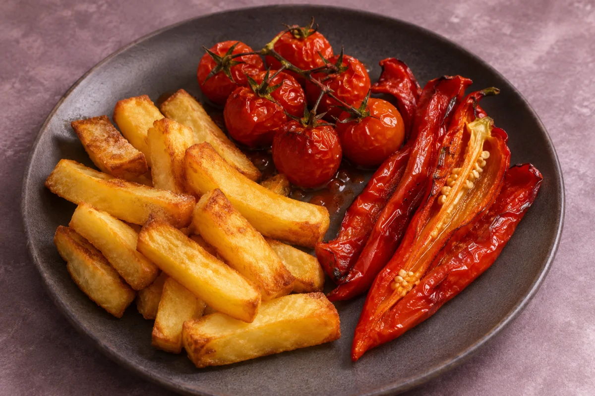

Fries & Baby Vine Tomatoes
Eat a fry and an air-fried tomato in the same bite. To Ethan, it tastes like fresh ketchup off the vine. He prefers it to bottled ketchup.
Shared Drawer SettingsEthan’s go-to air fryer recipes and favourite things to eat together.
Go-To Recipes
Eat a fry and an air-fried tomato in the same bite. To Ethan, it tastes like fresh ketchup off the vine. He prefers it to bottled ketchup.
Shared Drawer SettingsThe browned Romano pepper was phenomenally good, especially the bit right around the seeds. That was Ethan’s favourite part.
Shared Drawer SettingsThese are the drawer settings from Ethan’s COSORI. Follow your packet and check your food before serving. Food Standards Agency cooking guidance
The shared drawer behind both featured picks.
The chips were chilled, triple-cooked chips in beef dripping. The 14-minute setting is for this shared load. A pepper-only cook or swapping in frozen fries would need its own timing check.
Two drawer settings Ethan liked in earlier cooks and used together for this dinner.
The two-drawer program finished as set. Ethan liked the chicken and tomatoes from the earlier cooks that supplied these settings.
The salmon and baby potatoes were the highlights. Ethan likes the potatoes with olive oil and plenty of salt.
These are the settings accepted at Start. The exact cut size, position and oil amounts were unrecorded. Ethan found the asparagus a little fibrous.
Ethan called these sweet little tomatoes “balls of joy.”
The top drawer cooked only tomatoes while eggs ran below on Sync. The variety, amount and original seasoning were unrecorded.
Ethan liked the crispness from this top-drawer cook, even with the fries still pale.
This was the 15-minute top-drawer setting in a synced cook. Check the result again if you change drawers, load size or the type of fries.